Reading a small chip from photographs alone: what worked and what did not
I tried to turn two photographs of a chip into a transistor-level circuit, with no human tracing to lean on. The memory array came out right, and an outside check confirms it. One block of regular logic came out right with hand corrections. Irregular logic did not: the result looked finished and was still wrong, and I had no way to see that from the inside.
This follows the Intel 4004 project, where the circuit was extracted from mask tracings that people had drawn by hand over years. The question here was whether I could do the hard first step myself on something smaller.
ROM contents. 1,024 bits read from the photos. CRC32 and SHA1 equal the values the MAME project records for this chip.
Regular logic. 117 transistors, no wrong connections found, after 16 hand corrections. Checked only by the extractor itself.
Irregular logic. 104 transistors. About 1 wrong connection per 17 transistors survived every check that did not rely on repetition.
The chip and the photographs
The HA1152 is a small sound-effect chip from a Nelsonic Star Fox game watch. Sean Riddle photographed the die twice and put both pictures on Wikimedia Commons: once as it is, with the metal wiring on top, and once after the metal was etched away to show the silicon underneath. Both pictures are needed. The first shows what is wired to what. The second shows where the transistors are.
I picked it because it is small (about 2,400 logic transistors by my estimate), has only one layer of metal, and as far as I could find nobody has published a circuit for it.
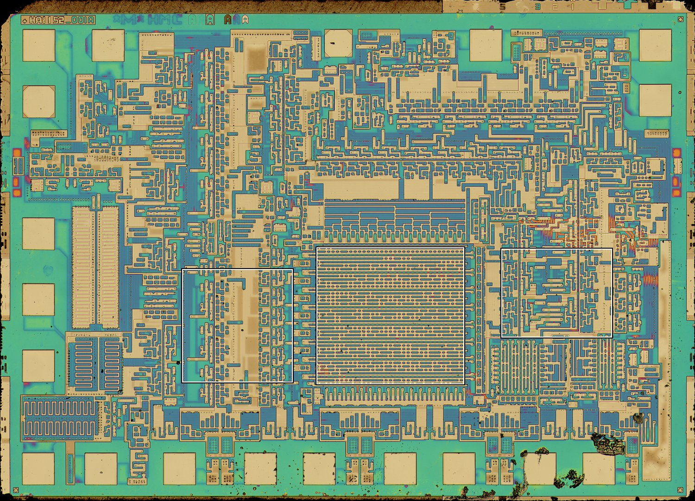
Step 1: lining the two photos up
The two photos were taken separately, so a point in one is a few pixels off in the other. Since a transistor channel is only about 20 pixels long, they have to be matched to within a few pixels everywhere.
My first attempt matched edges, and failed: the photos show different layers, so their edges are mostly different edges. What both do share is the thin dark outline wherever the surface steps up or down. Matching on those outlines alone worked. The typical leftover error is 1 pixel, and 99% of test patches are within about 10.
Step 2: working out what the colours mean
Nothing tells you what you are looking at; you have to decide. From the shapes, my reading was a metal-gate CMOS process:
- Tan and blue in the bare-silicon photo are the two kinds of doped silicon.
- A pink band is thin oxide. Where metal passes over a pink band, that is a transistor, and the metal is its gate.
- Small pits and bright dots are contacts, where a metal wire reaches down to the silicon.
I could not tell which colour is n-type and which is p-type. Swapping them gives the same circuit with every signal inverted, so it matters less than it sounds, and it stays an open point.
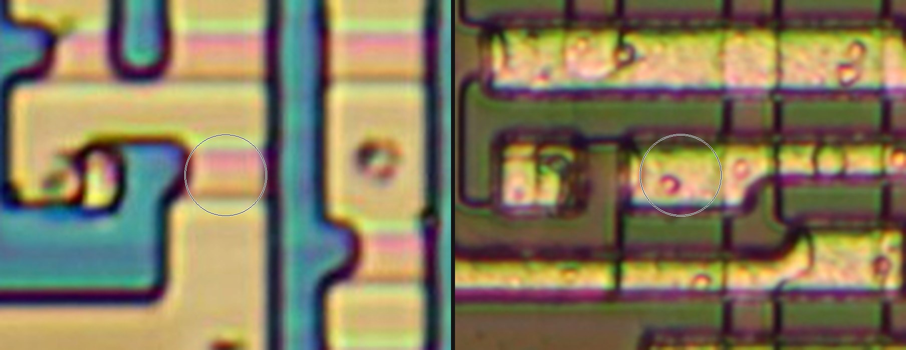
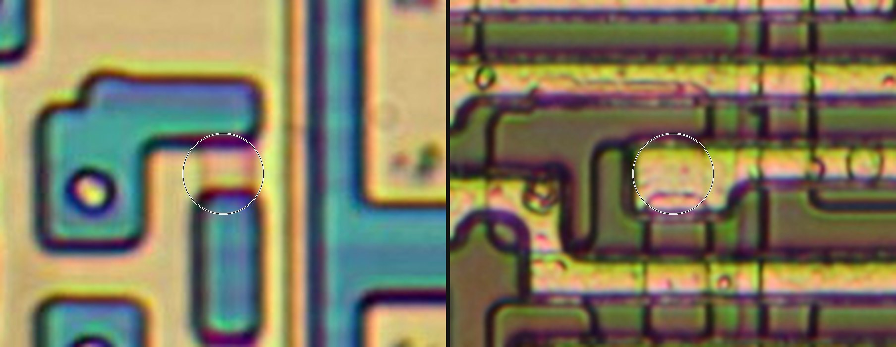
Step 3: the ROM, and the one outside check
The chip holds a small memory of 32 by 32 cells. Memory arrays are grids, and reading a grid is far easier than tracing wiring: find the rows and columns, then decide for each cell whether a transistor is there.
The MAME emulator project has a dump of this ROM, read out electrically by someone else. I did not download it. MAME's source lists its checksums, and that is enough: if my 128 bytes produce the same CRC32 and SHA1, they are the same bytes.
- Two separate readers, one per photo, agreed on 1,007 of 1,024 cells. I settled the other 17 by looking.
- The bits then had to be put in the right order. The search tried about 269,000 orderings and found one that matches both checksums.
- No cell was changed to make it fit.
This is the only result here confirmed by something I did not control. It also shows that the photo alignment and the "pink band under metal is a transistor" reading are sound. It is not a discovery: the dump already existed.
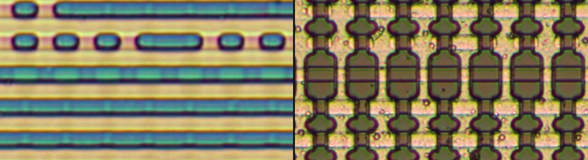
Step 4: a first block of logic
For ordinary logic every wire has to be followed. The program I built does this in stages: classify the silicon colours, find the metal, find contacts, find channels, then join everything that touches into nets.
The test block turned out to hold a shift register and a column of latches, each built from the same cell repeated down the page. That fell out of the extracted circuit; I had not known what was there.
| Block 1, 117 transistors | Program alone | After 16 hand corrections |
|---|---|---|
| Transistors with a wrong connection | 25 | 0 found |
| Transistors in well-formed gates | 32% | 112 of 117 |
"Well-formed" is a check that needs no outside information. In CMOS, every gate has a pull-up half and a pull-down half that must be exact opposites. A wrong or missing transistor usually breaks that. The 5 that fail are cut by the edge of the block.
So the program alone was wrong about one transistor in five. The fixes were things like this:
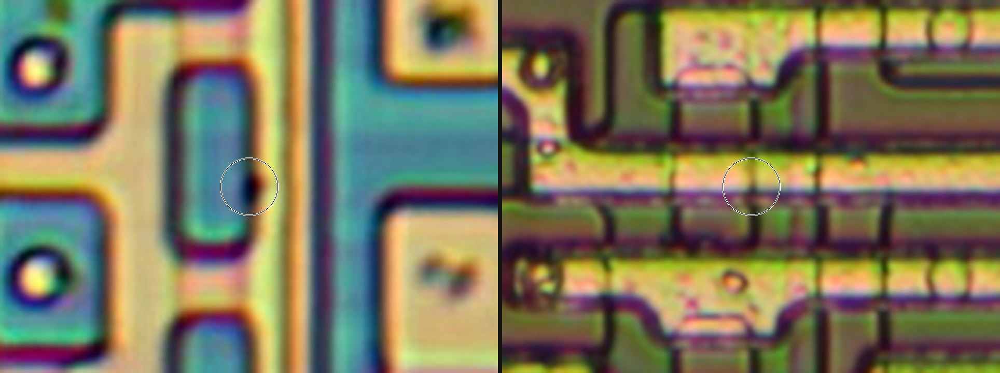
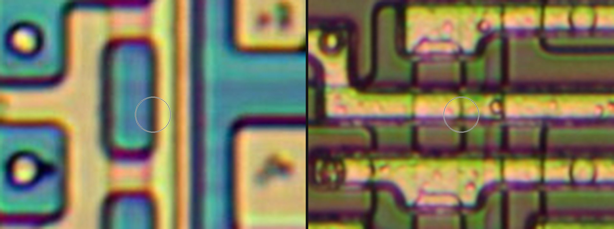
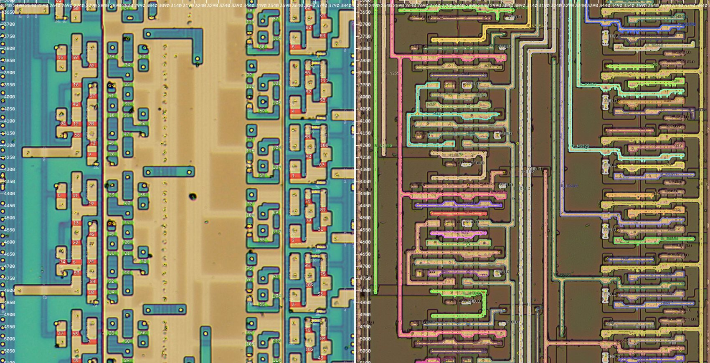
Two reasons not to make too much of this pass. The same agent extracted the circuit and checked it. And about half of the errors were first spotted by comparing one copy of a cell with the next, which only works where cells repeat.
Step 5: a block without that help
I then ran the same program, untouched, on a block of irregular logic on the other side of the chip. It fell apart: it found 38 transistors, called every one of them the same type, and merged the two power rails into a single wire.
The cause was a rule I had built from block 1 without realising it was a special case. I had assumed that a colour always means the same thing. It does not:
- Tan is one kind of doped silicon inside a well, and bare substrate outside it. Blue is the reverse.
- In this block the ground supply runs through large tan areas of silicon, not through metal. The program took those for background.
- Dark magenta patches, where a wire runs along the silicon, look like breaks and are not.
- Orange is staining left by the etch. Nothing under it can be read.
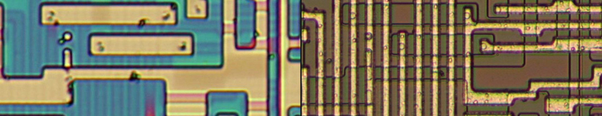
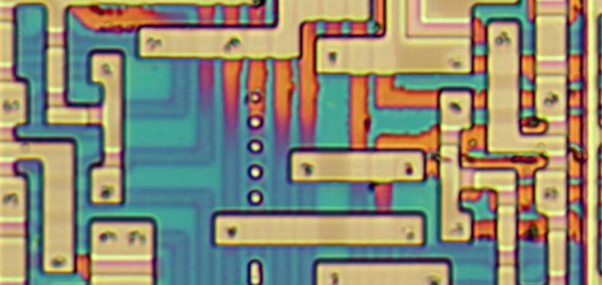
After fixing those rules and making 25 hand corrections, the block gave 104 transistors and a circuit that looked complete. Then came the check that matters.
The check that passed and should not have
Twenty transistors were picked at random and traced again from plain crops, without looking at the extracted circuit. All twenty agreed with it. On that evidence the block was done.
It was not. While reading those crops, the agent noticed that this block also repeats: two rows of the same logic, one above the other. Comparing the rows by program turned up four more errors: two transistors missed entirely, one missed contact, and one contact attached to only half of its region. None was in the random sample. None was flagged by the well-formed check. None had been seen by eye.
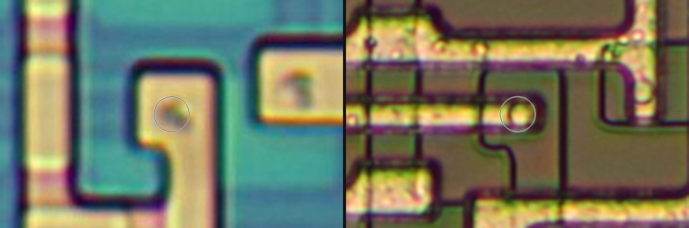
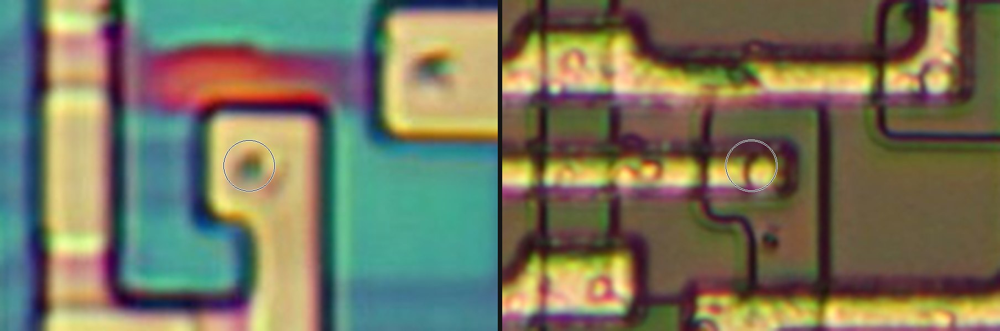
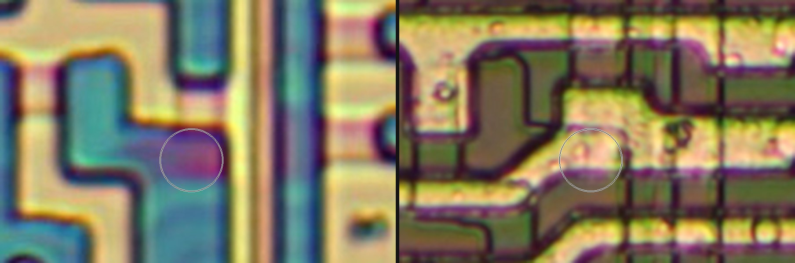
| Block 2, 104 transistors | Program alone | When it looked finished | Delivered |
|---|---|---|---|
| Transistors with a wrong connection | 37 | 6 (1 per 17) | 0 known |
| Missed transistors | 5 | 2 | 0 known |
| Hand corrections | 0 | 21 | 25 |
The pass mark I had set beforehand was at most 1 wrong connection per 50 transistors. "0 known" in the last column is measured against the result itself, so it means little. Also, 46 of the 104 transistors could not be judged by the well-formed check at all, because their wires leave the block.
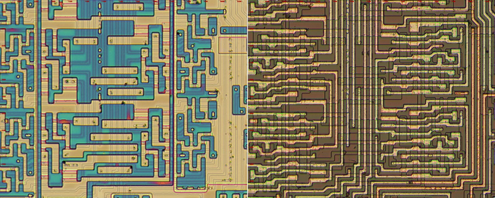
Why I stopped
Finding most of the transistors and wires is not the hard part. The hard part is the last few percent, and knowing whether you have them.
- The errors are quiet. A missed contact in a faint spot leaves a circuit that still looks like a sensible circuit.
- The self-checks have blind spots. The well-formed check catches shorts to power and missing transistors. It cannot see two signals swapped between gates of the same kind, or a wire that should reach one more place.
- Random sampling is too weak. Twenty clean samples do not rule out an error rate of several percent.
- Only repetition found the rest, and most of a chip's control logic does not repeat.
Scaled to the whole chip, the estimate is 50 to 90 hours of agent work and 400 to 600 hand decisions, ending in a circuit with something like 100 wrong connections that I could not locate. A circuit like that will not run correctly in simulation, and there is no reference behaviour to debug it against. So I did not attempt the whole chip.
What this says about the earlier 4004 work
It makes the debt to the people who traced the 4004 by hand clearer. Given their clean tracings, getting to a running chip took me minutes. Without tracings, on a chip a similar size, I could read the memory and the regular parts and could not get the rest to a standard I would trust.
What might change the answer
None of this has been tried:
- A rule that every wire end must land on a contact or a gate. It would have caught three of the missed contacts.
- Finding contacts from the metal photo, where their rings are clear, instead of from the silicon photo, where dirt looks the same.
- A second trace by an independent agent, with windows wide enough to follow long wires.
- Extracting connected units whole and simulating them, so that wrong behaviour points at wrong wiring.
My guess is that these would help but not reach the mark on their own.
Limits of this account
- The two logic blocks were extracted and checked by AI agents working under my direction. I read their reports, re-ran the first block's result, recomputed the ROM checksums myself, and looked at a handful of transistors on plain crops. I did not re-trace their circuits.
- No person has checked any of the logic.
- Which silicon colour is n-type is still a guess.
- The order of the ROM bits matches the existing dump's convention, which may not be how the chip itself addresses them.
Credit
Both die photographs are by Sean Riddle, from Wikimedia Commons, under CC BY-SA 4.0; the crops on this page are derived from them and carry the same licence. The ROM checksums come from the MAME project's source. No one else's tracing, schematic or description of this chip was used.